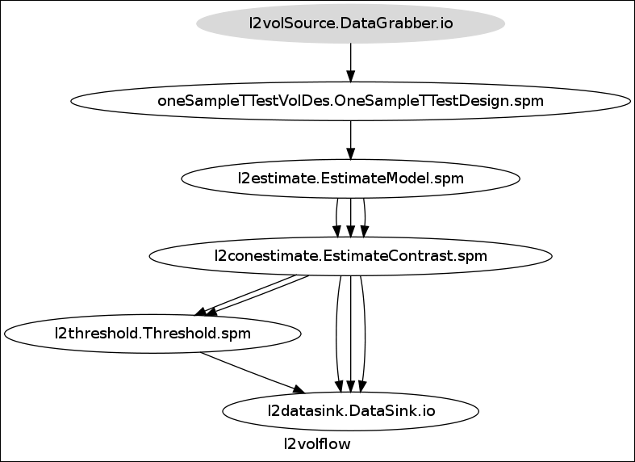
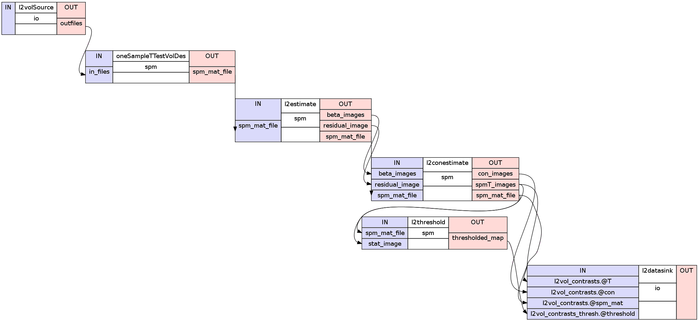
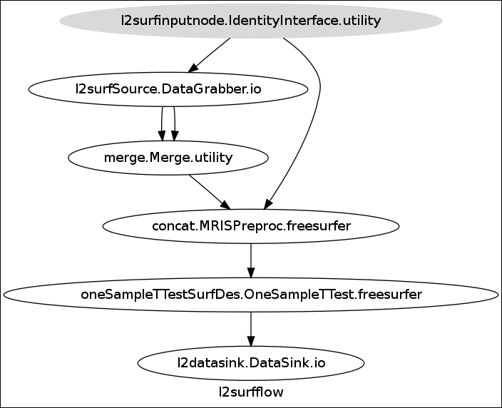
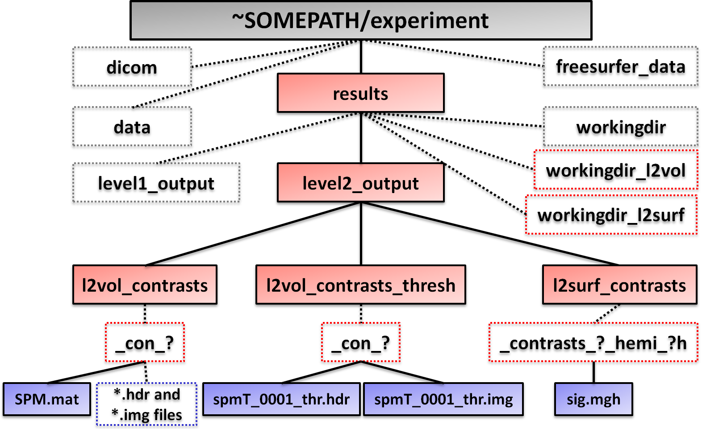

In this part you will learn how to do a second level analysis on the volume and the surface. We want combine both pipelines in a common parent workflow. Of course this would be possible, but it is also a advantage to be able to run the pipelines separately.
Note
Before we can run the second level analysis on the volume we have to normalize the estimated volume contrasts from the first level pipeline into a common subject space. One method how you can achieve this will be covered in the chapter about ANTS. This normalization isn’t required for a second level analysis on the surface. Because the second level surface analysis will be done with FreeSurfer, we can use the subject specific informations won from the recon-all process.
It doesn’t matter if you are running you’re analysis only on the volume, on the surface or both. As always we’re beginning by importing the necessary modules and implementation of the experiment specific parameters.
1 2 3 4 5 | import nipype.interfaces.freesurfer as fs # freesurfer
import nipype.interfaces.io as nio # i/o routines
import nipype.interfaces.spm as spm # spm
import nipype.interfaces.utility as util # utility
import nipype.pipeline.engine as pe # pypeline engine
|
1 2 3 4 5 6 7 8 9 10 11 12 13 14 | #to better access the parent folder of the experiment
experiment_dir = '~SOMEPATH/experiment'
#tell FreeSurfer where the recon-all output is at
freesurfer_dir = experiment_dir + '/freesurfer_data'
fs.FSCommand.set_default_subjects_dir(freesurfer_dir)
#list of subjectnames
subjects = ['subject1', 'subject2', 'subject3']
#second level analysis pipeline specific components
nameOfLevel2Out = 'level2_output'
numberOfContrasts = 5 #number of contrasts you specified in the first level analysis
contrast_ids = range(1,numberOfContrasts+1) #to create a list with value [1,2,3,4,5]
|
Note
If you want to only analyze the 3rd and 4th contrasts, you could specify contrast_ids as range(3,5) which would create the list [3,4]
As always we first have to specify where the datagrabber node can find the data. Le’s assume that we have stored our normalized estimated volume contrasts at: '~SOMEPATH/experiment/results/level1_output/normcons/subject_name/'. This means the third contrast of the second subject would be at: '~SOMEPATH/experiment/results/level1_output/normcons/subject2/con_0001.nii'
1 2 3 4 5 | #Node: DataGrabber - to collect all the con images for each contrast
l2volSource = pe.Node(nio.DataGrabber(infields=['con']), name="l2volSource")
path2normcons = experiment_dir + '/results/level1_output/normcons/subject*/con_%04d.nii'
l2volSource.inputs.template = path2normcons
l2volSource.iterables = [('con',contrast_ids)] # iterate over all contrast images
|
You might be confused with the asterisk in l2volSource.inputs.template and that we didn’t iterated over the subjects. This is because of the nature of a second level analysis. We take all estimated contrasts of each subject at once into the analysis, therefore the asterisk. We only have to iterate the conditions e.g. the number of the contrasts.
1 2 3 4 5 6 7 8 9 10 11 12 13 14 15 16 17 18 19 20 21 22 23 24 | #Node: OneSampleTTest - to perform an one sample t-test analysis
oneSampleTTestVolDes = pe.Node(interface=spm.OneSampleTTestDesign(),
name="oneSampleTTestVolDes")
#Node: EstimateModel - to estimate the model
l2estimate = pe.Node(interface=spm.EstimateModel(), name="l2estimate")
l2estimate.inputs.estimation_method = {'Classical' : 1}
#Node: EstimateContrast - to estimate the contrast (in this example just one)
l2conestimate = pe.Node(interface = spm.EstimateContrast(), name="l2conestimate")
cont1 = ('Group','T', ['mean'],[1])
l2conestimate.inputs.contrasts = [cont1]
l2conestimate.inputs.group_contrast = True
#Node: Threshold - to threshold the estimated contrast
l2threshold = pe.Node(interface = spm.Threshold(), name="l2threshold")
l2threshold.inputs.contrast_index = 1
l2threshold.inputs.use_fwe_correction = False
l2threshold.inputs.use_topo_fdr = True
l2threshold.inputs.extent_threshold = 1
#voxel threshold
l2threshold.inputs.extent_fdr_p_threshold = 0.05
#cluster threshold (value is in -ln()): 1.301 = 0.05; 2 = 0.01; 3 = 0.001,
l2threshold.inputs.height_threshold = 3
|
Note
Of course you can all different kinds of statistical analysis. Another example beside a one sample t-test would be multiple regression analysis. Such a node would look this:
1 2 3 4 5 6 7 8 | #Node: MultipleRegressionDesign - to perform a multiple regression analysis
multipleRegDes = pe.Node(interface=spm.MultipleRegressionDesign(),
name="multipleRegDes")
#regressor1 and regressor2 for 3 subjects
multipleRegDes.inputs.covariates = [dict(vector=[-0.30,0.52,1.75],
name='nameOfRegressor1'),
dict(vector=[1.55,-1.80,0.77],
name='nameOfRegressor2')]
|
1 2 3 4 5 6 7 8 9 10 11 12 13 | #Create 2-level vol pipeline and connect up all components
l2volflow = pe.Workflow(name="l2volflow")
l2volflow.base_dir = experiment_dir + '/results/workingdir_l2vol'
l2volflow.connect([(l2volSource,oneSampleTTestVolDes,[('outfiles','in_files')]),
(oneSampleTTestVolDes,l2estimate,[('spm_mat_file','spm_mat_file')]),
(l2estimate,l2conestimate,[('spm_mat_file','spm_mat_file'),
('beta_images','beta_images'),
('residual_image','residual_image')
]),
(l2conestimate,l2threshold,[('spm_mat_file','spm_mat_file'),
('spmT_images','stat_image'),
]),
])
|
An important difference between the format of the volume and the surface data is, that the surface data are img-files and are separated for both hemispheres. In contrast the volume data is in nifti-files which contain both hemispheres. This separation means that we have to iterate over the left (‘lh’) and the right (‘rh’) hemisphere.
As mentioned above, our second level surface pipeline does have to iterate over the different contrasts and the left and right hemisphere. This can be done with the usual individually defined IdentityInterface node.
1 2 3 4 5 | #Node: IdentityInterface - to iterate over contrasts and hemispheres
l2surfinputnode = pe.Node(interface=util.IdentityInterface(fields=['contrasts','hemi']),
name='l2surfinputnode')
l2surfinputnode.iterables = [('contrasts', contrast_ids),
('hemi', ['lh','rh'])]
|
Again we have to be aware about the structure of our data folder. We know from the first level analysis pipeline that our estimated surface contrasts are stored at: '~SOMEPATH/experiment/result/level1_output/'. This will be defined as base_directory of the datagrabber node.
1 2 3 4 5 6 7 8 9 | #Node: DataGrabber - to collect contrast images and registration files
l2surfSource = pe.Node(interface=nio.DataGrabber(infields=['con_id'],
outfields=['con','reg']),
name='l2surfSource')
l2surfSource.inputs.base_directory = experiment_dir + '/level1_output/'
l2surfSource.inputs.template = '*'
l2surfSource.inputs.field_template = dict(con='surf_contrasts/_subject_id_*/con_%04d.img',
reg='bbregister/_subject_id_*/*.dat')
l2surfSource.inputs.template_args = dict(con=[['con_id']],reg=[[]])
|
Now that we have defined where our data comes from, we can start with implementing the nodes.
1 2 3 4 5 6 7 8 9 10 11 12 13 14 15 16 17 18 19 20 21 22 23 24 25 | #Node: Merge - to merge contrast images and registration files
merge = pe.Node(interface=util.Merge(2, axis='hstack'),name='merge')
#function to create a list of all subjects and the location of their specific files
def ordersubjects(files, subj_list):
outlist = []
for subject in subj_list:
for subj_file in files:
if '/_subject_id_%s/'%subject in subj_file:
outlist.append(subj_file)
continue
return outlist
#Node: MRISPreproc - to concatenate contrast images projected to fsaverage
concat = pe.Node(interface=fs.MRISPreproc(), name='concat')
concat.inputs.target = 'fsaverage'
concat.inputs.fwhm = 5 #the smoothing of the surface data happens here
#function that transforms a given list into tuples
def list2tuple(listoflist):
return [tuple(x) for x in listoflist]
#Node: OneSampleTTest - to perform a one sample t-test on the surface
oneSampleTTestSurfDes = pe.Node(interface=fs.OneSampleTTest(),
name='oneSampleTTestSurfDes')
|
1 2 3 4 5 6 7 8 9 10 | #Create 2-level surf pipeline and connect up all components
l2surfflow = pe.Workflow(name='l2surfflow')
l2surfflow.base_dir = experiment_dir + '/results/workingdir_l2surf'
l2surfflow.connect([(l2surfinputnode,l2surfSource,[('contrasts','con_id')]),
(l2surfinputnode,concat,[('hemi','hemi')]),
(l2surfSource,merge,[(('con', ordersubjects, subjects),'in1'),
(('reg', ordersubjects, subjects),'in2')]),
(merge,concat,[(('out', list2tuple),'vol_measure_file')]),
(concat,oneSampleTTestSurfDes,[('out_file','in_file')]),
])
|
If you want to store the data from the second level volume and surface pipeline at a common location you should use a datasink node. You can use the same datasink node for both pipelines because you aren’t running both pipelines in the same run.
1 2 3 4 5 6 7 8 9 10 11 12 13 14 15 16 17 | #Node: Datasink - Create a datasink node to store important outputs
l2datasink = pe.Node(interface=nio.DataSink(), name="l2datasink")
l2datasink.inputs.base_directory = experiment_dir + '/results'
l2datasink.inputs.container = nameOfLevel2Out
#integration of the datasink into the volume analysis pipeline
l2volflow.connect([(l2conestimate,l2datasink,[('spm_mat_file','l2vol_contrasts.@spm_mat'),
('spmT_images','l2vol_contrasts.@T'),
('con_images','l2vol_contrasts.@con'),
]),
(l2threshold,l2datasink,[('thresholded_map',
'vol_contrasts_thresh.@threshold')]),
])
#integration of the datasink into the surface analysis pipeline
l2surfflow.connect([(oneSampleTTestSurfDes,l2datasink,[('sig_file',
'l2surf_contrasts.@sig_file')])])
|
Now that we have set up both pipelines we are able to run them. Note that those lines of codes mean that the second level surface pipeline won’t be started before the second level volume pipeline has terminated.
1 2 3 4 5 | l2volflow.write_graph(graph2use='flat')
l2volflow.run(plugin='MultiProc', plugin_args={'n_procs' : 2})
l2surfflow.write_graph(graph2use='flat')
l2surfflow.run(plugin='MultiProc', plugin_args={'n_procs' : 2})
|
Now that everything has been executed you are able to take a look at your results. I recommend to use the following tools to use:
Hint
The code for the second level pipeline on the volume and on the surface can be found here: secondlevelpipeline.py
This graph of the hierarchical version shows the l2volflow:
This detailed graph of the flat version shows the l2volflow:
This graph of the hierarchical version shows the l2surfflow:
This detailed graph of the flat version shows the l2surfflow:

After we’ve run the second level analysis pipeline on the volume and the surface our folder structure should look like this:
Additionally to the level1_output folder in ~SOMEPATH/experiment/results/ we now have the new folders:
workingdir_l2vol folder that contains all the data that gets created from the l2volflow pipeline. As with all working directories, it is highly recommended to delete this folder as soon as possible.
workingdir_l2surf folder that contains all the data that gets created from the l2surfflow pipeline. As with all working directories, it is highly recommended to delete this folder as soon as possible.
level2_output folder which is the datasink of the second level pipeline. It contains:
- l2vol_contrasts folder with the estimated volume contrasts and the SPM.mat file for each contrast
- l2vol_contrasts_thresh folder with a thresholded estimated volume contrasts file for each contrast
- l2surf_contrasts folder with the estimated surface contrast file for each hemisphere for each contrast